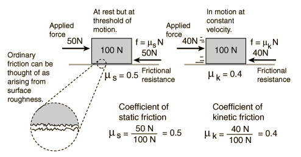

FrictionFrictional resistance to the relative motion of two solid objects is usually proportional to the force which presses the surfaces together as well as the roughness of the surfaces. Since it is the force perpendicular or "normal" to the surfaces which affects the frictional resistance, this force is typically called the "normal force" and designated by N. The frictional resistance force may then be written:
The frictional force is also presumed to be proportional to the coefficient of friction. However, the amount of force required to move an object starting from rest is usually greater than the force required to keep it moving at constant velocity once it is started. Therefore two coefficients of friction are sometimes quoted for a given pair of surfaces - a coefficient of static friction and a coefficent of kinetic friction. The force expression above can be called the standard model of surface friction and is dependent upon several assumptions about friction. While this general description of friction (which I will refer to as the standard model) has practical utility, it is by no means a precise description of friction. Friction is in fact a very complex phenomenon which cannot be represented by a simple model. Almost every simple statement you make about friction can be countered with specific examples to the contrary. Saying that rougher surfaces experience more friction sounds safe enough - two pieces of coarse sandpaper will obviously be harder to move relative to each other than two pieces of fine sandpaper. But if two pieces of flat metal are made progressively smoother, you will reach a point where the resistance to relative movement increases. If you make them very flat and smooth, and remove all surface contaminants in a vacuum, the smooth flat surfaces will actually adhere to each other, making what is called a "cold weld". |
Index Friction concepts Plot of standard model Reference Jones & Childers, 2nd Ed. Sec 4.8 | |||
|
Go Back |
Friction and Surface RoughnessIn general, the coefficients of friction for static and kinetic friction are different. Like all simple statements about friction, this picture of friction is too simplistic. Saying that rougher surfaces experience more friction sounds safe enough - two pieces of coarse sandpaper will obviously be harder to move relative to each other than two pieces of fine sandpaper. But if two pieces of flat metal are made progressively smoother, you will reach a point where the resistance to relative movement increases. If you make them very flat and smooth, and remove all surface contaminants in a vacuum, the smooth flat surfaces will actually adhere to each other, making what is called a "cold weld". Once you reach a certain degree of mechanical smoothness, the frictional resistance is found to depend on the nature of the molecular forces in the area of contact, so that substances of comparable "smoothness" can have significantly different coefficients of friction. An easily observed counterexample to the idea that rougher surfaces exhibit more friction is that of ground glass versus smooth glass. Smooth glass plates in contact exhibit much more frictional resistance to relative motion than the rougher ground glass. |
Index Friction concepts Coefficients of friction Plot of friction force Reference Jones & Childers, 2nd Ed. Sec 4.8 | ||
|
Go Back |
Coefficients of FrictionFriction is typically characterized by a coefficient of friction which is the ratio of the frictional resistance force to the normal force which presses the surfaces together. In this case the normal force is the weight of the block. Typically there is a significant difference between the coefficients of static friction and kinetic friction. Note that the static friction coefficient does not characterize static friction in general, but represents the conditions at the threshold of motion only.
|
Index Friction concepts Relation to surface roughness Plot of friction force | ||
|
Go Back |
Normal ForceFrictional resistance forces are typically proportional to the force which presses the surfaces together. This force which will affect frictional resistance is the component of applied force which acts perpendicular or "normal" to the surfaces which are in contact and is typically referred to as the normal force. In many common situations, the normal force is just the weight of the object which is sitting on some surface, but if an object is on an incline or has components of applied force perpendicular to the surface, then it is not equal to the weight. The above cases are the commonly encountered situations for objects at rest or in straight line motion. For curved motion, there are cases like a car on a banked curve where the normal force is determined by the dynamics of the situation. In that case, the normal force depends upon the speed of the car as well as the angle of the bank. |
Index Friction concepts | ||
|
Go Back |